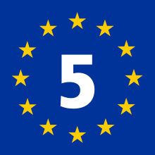

<footer>
    <div id="logos_footer">
        <div id="logo_ensemble">
            
        </div>
        <div>
            
            
            
        </div>
    </div>
    <div id="footer_bottom">
        <div id="footer_text">
            <h1>
                Qui sommes-nous ? 
            </h1>
            <p>
                La Vélodyssée est un projet porté collectivement par 3 Régions et 9 Départements réunis autour d'une ambition commune : positionner La Vélodyssée comme un itinéraire d'excellence du tourisme à vélo en France et à l'étranger.
            </p>
        </div>
        <div id="footer_buttons">
            <button id="more">
                En savoir plus
            </button>   
            <button id="contact_us">
                Nous contacter
            </button>
        </div>
    </div>
    <div id="footer2">
        <div id="mentions_legales">
            <section id="mentions_legales_liste">
                <ul>
                    <li>
                        Mentions légales
                    </li>
                    <li>
                        Politique de confidentialité
                    </li>
                    <li>
                        Presse
                    </li>
                    <li>
                        Gestion des cookies
                    </li>
                </ul>
            </section>
            <section id="real_by">
                <p>
                    Réalisé par BGJJT Team
                </p>
                
            </section>
        </div>
    </div>
</footer>
